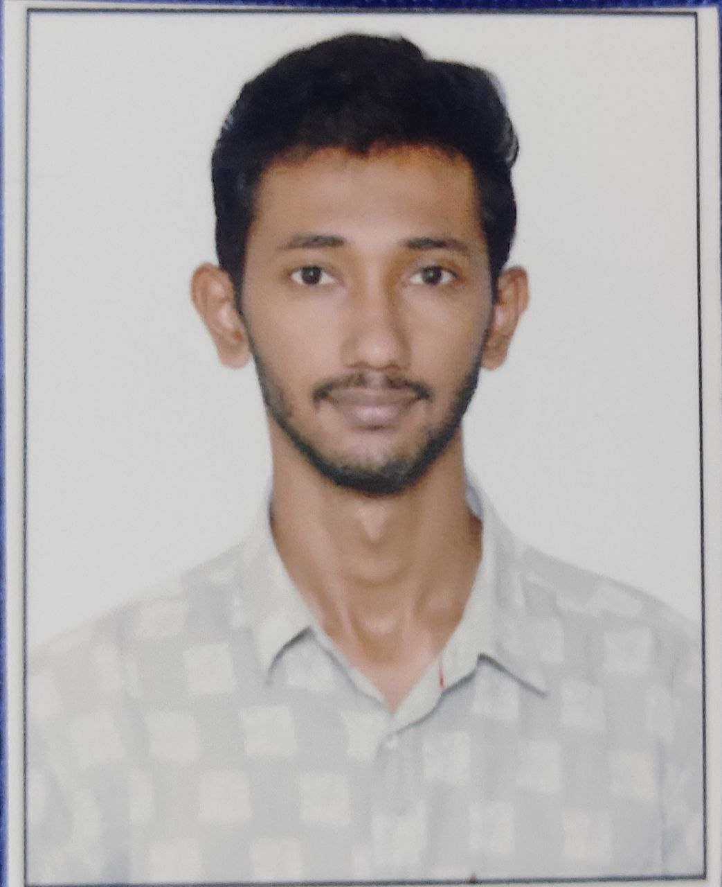

<!DOCTYPE html>
<html lang="en">
<head>
    <meta charset="UTF-8">
    <meta name="viewport" content="width=device-width, initial-scale=1.0">
    <title>Poorvik"Resume</title>
</head>
<body>
    
</body>
</html>
<ul><h1>
    POORVIK K M
</h1>


<p>Contact No:9590307829
    <br>
    Email:poorvik9683@gmail.com
</p>
<hr>
<h3>
    Career Objective<h3></h3>
<li>
    "Motivated web developer with a BE in Electrical and Electronics Engineering, seeking an entry-level role to apply my skills in creating responsive, user-friendly websites.<br> Eager to contribute to team success and grow in a dynamic organization."
</li>
<hr>
<h3>
    Technical Skills
    
</h3><hr>
<h3>
   
    Web Technology:
   
</h3><hr>
<li>  
    Good Knowledge on HTML attributes and tags.</li><br>
 <li>Good understanding of CSS properties and values.</li><br>
<li> Excellent knowledge on Bootstrap.</li><br>
 <li>Good understanding on JavaScript with object oriented programming. 
</li>
<h3>
    Other Language:
</h3><hr>
<li>
    Advanced C
</li>
<li>
    Data Structure
</li>
<h3>
    Educational Qualifications:
</h3><hr>
<li>
    BE in EEE-VTU(2017-2021)-7.68 CGPA
    </li>
    <li>
        PUC-(2017)-82.83%
    </li>
    <li>
        SSLC-(2015)-95.84%
    </li>
    <H3>
        Projects:
    </H3><hr>
    <li>


    </li>
     <h3>
        Experience:
     </h3>   <hr>
     <li>
        InfoTech Jr.Associate at TCS(Feb 2022-Aug 2023)
     </li>


